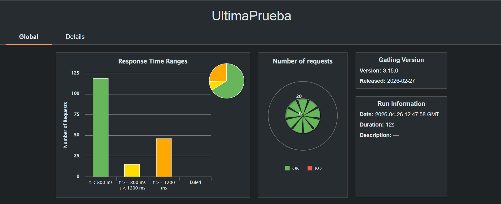
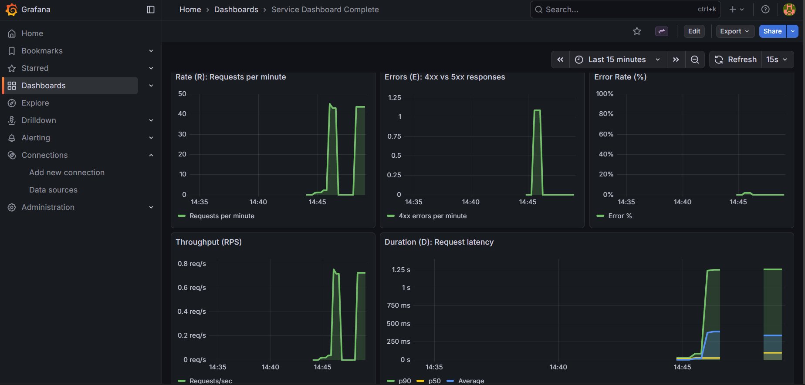
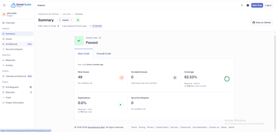

About arc42
arc42, the template for documentation of software and system architecture.
Template Version 8.2 EN. (based upon AsciiDoc version), January 2023
Created, maintained and © by Dr. Peter Hruschka, Dr. Gernot Starke and contributors. See https://arc42.org.
1. Introduction and Goals
1.1. Requirements Overview
El proyecto YOVI tiene como objetivo desarrollar una plataforma web que permita jugar al juego de tablero Y tanto a personas como a bots. El sistema busca mejorar la accesibilidad al juego, permitir la interacción automatizada mediante una API pública y ofrecer estadísticas e histórico de partidas a los usuarios registrados.
La solución estará compuesta por dos subsistemas principales:
-
Una aplicación web implementada en TypeScript que proporciona la interfaz de usuario, la gestión de usuarios y una API pública.
-
Un motor de juego implementado en Rust encargado de validar si una partida ha sido ganada y de sugerir el siguiente movimiento mediante distintas estrategias.
Ambos subsistemas se comunicarán mediante mensajes JSON utilizando la notación YEN para representar el estado del tablero.
Requisitos funcionales principales:
-
Los usuarios podrán registrarse y autenticarse en la plataforma.
-
Los jugadores podrán jugar al juego Y clásico contra la máquina.
-
La aplicación ofrecerá varias estrategias y niveles de dificultad.
-
El sistema almacenará estadísticas e histórico de partidas.
-
Se expondrá una API pública que permitirá a bots jugar partidas y gestionar información.
-
La aplicación estará desplegada y accesible a través de Internet.
1.2. Quality Goals
The top three (max five) quality goals for the architecture whose fulfillment is of highest importance to the major stakeholders. We really mean quality goals for the architecture. Don’t confuse them with project goals. They are not necessarily identical.
Consider this overview of potential topics (based upon the ISO 25010 standard):

You should know the quality goals of your most important stakeholders, since they will influence fundamental architectural decisions. Make sure to be very concrete about these qualities, avoid buzzwords. If you as an architect do not know how the quality of your work will be judged…
A table with quality goals and concrete scenarios, ordered by priorities
| Prioridad | Objetivo de calidad | Escenario |
|---|---|---|
1 |
Usabilidad |
Un usuario nuevo puede registrarse e iniciar una partida en menos de 2 minutos sin necesidad de documentación. |
2 |
Rendimiento |
El motor del juego devuelve la validación de una partida o el siguiente movimiento en menos de 1 segundo en condiciones normales. |
3 |
Escalabilidad |
La arquitectura permite soportar un incremento significativo de usuarios y llamadas a la API sin rediseños importantes. |
4 |
Mantenibilidad |
Se pueden añadir nuevas estrategias de juego sin modificar módulos existentes. |
5 |
Fiabilidad |
La validación de partidas produce resultados correctos y consistentes en todo momento. |
1.3. Stakeholders
| Role/Name | Contact | Expectations |
|---|---|---|
Estudiantes |
Richard Robin Roque del Rio, Luis Jose Remuñan Ovies, Enol Ruiz Barcala, Ikram El Mabrouk Morhnane, Omayma El Imami Gaada |
Equipo responsable del análisis, diseño, implementación y documentación del sistema. |
Usuarios |
Personas que usen la aplicación |
Experiencia de juego sencilla, rápida y acceso a estadísticas. |
Profesores |
José Emilio Labra, Pablo González, Celia Melendi Lavandera, Diego Martín Fernández |
Supervisión del proyecto y evaluación de la calidad técnica y documental. |
2. Architecture Constraints
2.1. Restricciones técnicas
| Restricción | Descripción |
|---|---|
Tecnologías obligatorias |
La aplicación web debe desarrollarse en TypeScript y el motor del juego en Rust. |
Comunicación entre subsistemas |
La comunicación entre la web y el motor se realizará mediante mensajes JSON. |
Notación del juego |
El estado de la partida se representará con la notación YEN. |
API pública |
Debe existir una API para que bots puedan interactuar y jugar. |
2.2. Restricciones organizativas
| Restricción | Descripción |
|---|---|
Trabajo en equipo |
El desarrollo se realiza en grupo y requiere coordinación y reparto de tareas. |
Repositorio |
El código y la documentación se gestionarán en un repositorio compartido. |
Documentación |
La documentación de arquitectura debe seguir el modelo arc42. |
2.3. Restricciones de despliegue
| Restricción | Descripción |
|---|---|
Accesibilidad |
La aplicación debe estar desplegada y accesible a través de Internet. |
Evaluación |
Se valorará funcionalidad, calidad de implementación y calidad de documentación. |
3. Context and Scope
Esta seccion describe el contexto del sistema YOVI: su entorno, los actores externos con los que interactua y las interfaces que delimitan su alcance.
A diferencia de Introduction and Goals, aqui no se detallan requisitos ni objetivos de calidad, sino las fronteras del sistema y su relacion con el entorno.
3.1. Business Context
YOVI es una plataforma web para jugar al juego de tablero Y en modo local (dos jugadores en la misma pantalla) o contra un bot. El sistema integra interfaz de usuario, autenticacion basica y la logica del motor GameY.
Desde el punto de vista del negocio, YOVI se considera una caja negra que ofrece una experiencia de juego sencilla con registro y login.
Actores externos principales:
| Actor / Sistema externo | Inputs hacia YOVI | Outputs desde YOVI |
|---|---|---|
Jugador |
Credenciales (username y password), seleccion de modo/tamano, movimientos |
Mensajes de login/registro, estado del tablero, resultado |
Motor GameY |
Estado del tablero en notacion YEN y movimiento humano |
Movimiento del bot y estado actualizado |
Base de Datos (Users) |
Usuarios registrados (username + hash) |
Confirmacion de alta o rechazo, ranking basico (victorias/derrotas) |
Base de Datos (GameY) |
Resultado final de la partida (winner, board_size, etc.) y sesiones de juego para bots |
Confirmacion de persistencia |
El jugador interactua unicamente con la aplicacion web. GameY no conoce al usuario ni a la interfaz grafica; se limita a validar jugadas, calcular el movimiento del bot y devolver el nuevo estado. Las bases de datos almacenan usuarios y resultados finales. Existe un ranking basico (victorias/derrotas) pero no estadisticas avanzadas en esta version.
3.2. Context Diagram
El siguiente diagrama muestra el contexto del sistema YOVI y sus relaciones con los actores y sistemas externos:

3.3. Technical Context
Desde el punto de vista tecnico, el sistema se compone de tres subsistemas independientes que se comunican por REST con mensajes JSON.
| Comunicacion | Canal / Protocolo | Formato |
|---|---|---|
Webapp <→ Users Service |
HTTP REST (puerto 3000) |
JSON |
Webapp <→ GameY |
HTTP REST (puerto 4000) |
JSON (notacion YEN) |
Users Service <→ MongoDB |
Conexion directa (driver de BD) |
Documentos (users) |
GameY <→ MongoDB |
Conexion directa (driver de BD) |
Documentos (games, sessions) |
La webapp corre en el navegador y es el punto de entrada unico. Los servicios backend no exponen interfaz grafica y se consumen por API.
Endpoints de GameY (API versionada, p.ej. v1):
| Endpoint | Uso |
|---|---|
GET /status |
Health check del servicio |
POST /v1/ybot/choose/{bot_id} |
Devuelve la jugada del bot |
POST /v1/game/move |
Aplica una jugada humana y devuelve el nuevo estado |
GET /v1/game/history |
Devuelve el historico de movimientos de una partida (si aplica segun modo) |
POST /v1/game/session |
Crea una sesion de juego para integracion con bots externos |
GET /v1/game/session/{session_id} |
Recupera el estado actual de una sesion |
POST /v1/game/session/{session_id}/move |
Aplica un movimiento en una sesion y devuelve el estado actualizado |
Puertos de despliegue en Docker:
| Servicio | Puerto |
|---|---|
Webapp |
80 |
Users Service |
3000 |
GameY |
4000 |
3.4. Scope (Alcance)
El alcance de esta entrega es una prueba de concepto funcional para validar arquitectura e integracion entre subsistemas.
Dentro del alcance:
-
Registro y login con validacion basica (usuarios guardados como username + hash).
-
Modo local y modo contra bot.
-
Seleccion de tamano de tablero y variante (standard / why_not).
-
Comunicacion funcional Webapp <→ Users Service y Webapp <→ GameY.
-
Almacenamiento en BD del resultado final de la partida (persistido por GameY).
-
Registro de resultados y ranking basico (victorias/derrotas) en Users Service.
-
API de sesiones para permitir integracion de bots externos con GameY.
-
Aplicacion accesible via web.
Fuera del alcance (versiones futuras):
-
Estadisticas avanzadas (ELO, rachas, filtros por variante/tamano, etc.) y rankings complejos.
-
Replays completos con UI dedicada y exportacion/comparticion.
-
Multiples niveles de dificultad del bot (p.ej. busqueda, heuristicas avanzadas, aprendizaje).
-
Multijugador en red entre personas.
Este alcance permite demostrar la viabilidad tecnica y servir como base para futuras extensiones.
4. Solution Strategy
La estrategia de solución de YOVI prioriza una arquitectura sencilla, modular y fácil de evolucionar. La idea central es separar claramente la interfaz de usuario, la gestión de usuarios y la lógica del juego para que cada parte pueda desarrollarse, probarse y desplegarse con bajo acoplamiento.
Esta decisión responde a los objetivos de calidad del proyecto: una experiencia directa para el jugador, tiempos de respuesta bajos en el motor, facilidad para introducir nuevas funcionalidades y una base técnica lo bastante flexible para crecer sin rediseñar el sistema.
4.1. Resumen de decisiones arquitectónicas
| Decisión | Motivación | Impacto esperado |
|---|---|---|
Separar interfaz, usuarios y motor de juego en subsistemas independientes |
Evitar acoplamiento excesivo entre presentación, gestión de cuentas y reglas del dominio |
Mejora la mantenibilidad y facilita el despliegue y la evolución independientes |
Implementar la webapp con React, Vite y TypeScript |
Necesidad de una interfaz rápida de desarrollar, con buena experiencia interactiva y menor riesgo de errores de integración |
Mayor productividad en frontend y mejor robustez en el contrato con las APIs |
Implementar el servicio de usuarios con Node.js y Express |
Resolver de forma sencilla la autenticación y la exposición de una API REST |
Backend ligero, comprensible y fácil de integrar con la webapp |
Implementar GameY en Rust |
Aislar la lógica crítica del juego en un componente eficiente y fiable |
Mejor rendimiento y menor probabilidad de errores en la validación de reglas |
Comunicar subsistemas mediante HTTP/REST y JSON |
Usar un contrato simple, interoperable y fácil de depurar |
Menor acoplamiento técnico y facilidad para probar integraciones |
Representar tableros con notación YEN |
Disponer de un formato común y compacto para intercambiar estados del juego |
Homogeneidad en la comunicación entre cliente y motor |
Desplegar el sistema con Docker Compose |
Reducir diferencias entre entornos de desarrollo, prueba y demostración |
Ejecución reproducible y puesta en marcha más simple para el equipo |
4.2. Decisiones tecnológicas clave
-
Webapp con React, Vite y TypeScript. Se elige una SPA ligera para ofrecer una interfaz rápida, con recarga ágil durante el desarrollo y tipado estático para reducir errores en la integración con los servicios.
-
Servicio de usuarios con Node.js y Express. Esta tecnología permite implementar una API REST pequeña y comprensible, adecuada para operaciones CRUD, autenticación básica e integración rápida con la webapp.
-
Motor de juego en Rust. La lógica de validación de partidas y cálculo de movimientos se aísla en un componente de alto rendimiento y comportamiento predecible, reduciendo el riesgo de errores en la parte más sensible del dominio.
-
Intercambio de datos mediante JSON y notación YEN. Se adopta un formato legible, portable y fácil de depurar, que simplifica la comunicación entre subsistemas y desacopla las implementaciones internas.
-
Despliegue local con Docker Compose. Se busca reproducibilidad del entorno y facilidad de puesta en marcha para desarrollo, pruebas y demostraciones.
-
Observabilidad básica con Prometheus y Grafana. Se introduce una base mínima para inspeccionar el estado del sistema y detectar problemas de rendimiento o disponibilidad.
4.3. Descomposición y patrón arquitectónico
YOVI sigue una descomposición por subsistemas con responsabilidades bien definidas:
-
Webapp: punto de entrada del usuario, gestión de vistas, interacción de juego y consumo de APIs.
-
Users service: gestión de registro, autenticación y persistencia de información de usuarios.
-
GameY: motor encargado de aplicar reglas, validar estados y calcular jugadas.
La comunicación entre componentes se realiza mediante HTTP/REST y mensajes JSON. Esta estrategia favorece el desacoplamiento, hace visibles los contratos entre módulos y permite sustituir o evolucionar un subsistema sin afectar directamente a los demás mientras se mantenga la interfaz pública.
Además, la persistencia se delega en los servicios backend en lugar de en la interfaz. Con ello, la webapp se centra en la experiencia de usuario y la lógica de negocio permanece en los componentes que pueden validarla y protegerla mejor.
4.4. Estrategias para alcanzar los objetivos de calidad
-
Usabilidad. La webapp concentra el flujo de interacción en una única entrada, con navegación sencilla y operaciones directas para registrarse, iniciar sesión y jugar.
-
Rendimiento. La lógica computacional del juego se concentra en Rust y se expone mediante endpoints pequeños, minimizando procesamiento innecesario en la capa web.
-
Mantenibilidad. La separación por responsabilidades evita mezclar interfaz, autenticación y reglas del juego, lo que facilita localizar cambios y ampliar el sistema.
-
Escalabilidad. La independencia de despliegue permite dimensionar por separado los subsistemas con mayor carga, especialmente el motor de juego o los servicios de usuario.
-
Fiabilidad. La validación de reglas se centraliza en un único motor, evitando inconsistencias derivadas de duplicar lógica entre cliente y servidor.
4.5. Decisiones organizativas y de desarrollo
-
Mono-repo por subsistemas. El repositorio agrupa código y documentación en una única estructura, lo que simplifica la coordinación del equipo y la trazabilidad entre decisiones de arquitectura e implementación.
-
Documentación arc42. Se utiliza una estructura documental estándar para justificar decisiones y mantener alineados requisitos, contexto, estrategia y despliegue.
-
Integración continua y pruebas automatizadas. La estrategia de desarrollo busca validar cambios de forma temprana mediante builds, tests y comprobaciones de integración.
-
Contenerización como base común de trabajo. Todos los miembros del equipo comparten una forma consistente de ejecutar el sistema, reduciendo diferencias entre entornos.
5. Building Block View
5.1. Whitebox Overall System
Overview Diagram

- Motivation
-
La descomposicion separa claramente interfaz, servicios y persistencia. Esto facilita mantener el sistema, probar cada parte por separado y evolucionar cada bloque sin afectar al resto.
- Contained Building Blocks
| Name | Responsibility |
|---|---|
Webapp |
Aplicacion SPA. Gestiona pantallas, estado de juego en cliente y coordinacion de llamadas a APIs. |
Users Service |
Servicio de autenticacion y ranking basico. Registra usuarios, valida credenciales, registra resultados (victorias/derrotas) y expone el ranking. |
GameY Engine |
Motor del juego Y. Aplica reglas, valida jugadas y expone endpoints de bot, movimiento humano, historico y sesiones para integracion con bots externos. |
MongoDB |
Persistencia comun con colecciones: |
- Important Interfaces
-
Las interfaces clave se describen en el nivel 2.
5.2. Level 2
5.2.1. White Box Webapp
Diagram

- Responsibility
-
Controla el flujo de usuario (inicio → menu → partida), renderiza el tablero y coordina la comunicacion con los servicios.
- Contained Building Blocks
| Component | Responsibility |
|---|---|
App.tsx |
Orquesta las vistas principales. |
RegisterForm.tsx |
Login/registro y validaciones en cliente. |
Menu.tsx |
Seleccion de modo, tamano y variante. |
GameBoard.tsx |
Render del tablero y control de turnos. |
GameyApi.ts |
Cliente HTTP hacia GameY. |
5.2.2. White Box Users Service
Diagram

- Responsibility
-
API de autenticacion y ranking basico. Verifica entradas, genera hash de contrasenas (scrypt) para operaciones de login/registro, persiste usuarios en MongoDB y expone endpoints de ranking/resultados.
- Contained Building Blocks
| Module | Responsibility |
|---|---|
users-service.js |
Endpoints |
openapi.yaml |
Contrato de API (Swagger UI en |
5.2.3. White Box GameY Engine
Diagram

- Responsibility
-
Motor de reglas del juego. Recibe el estado (YEN), valida jugadas y devuelve el nuevo estado, ademas del movimiento del bot. Incluye endpoints para historico y sesiones de juego orientadas a la integracion con bots externos.
- Contained Building Blocks
| Module | Responsibility |
|---|---|
core/ |
Estado del juego, reglas y validacion (variantes: standard, why_not). |
notation/ |
Conversion a/desde YEN. |
bot/ |
Estrategias de bot (random, center, corner, side, side_hard, bridge, blocker). Implementadas como modulos intercambiables. |
bot_server/ |
Endpoints HTTP (move/choose/history/session). |
db/ |
Persistencia de resultados finales y sesiones. |
5.3. Level 3
No se requiere mas detalle en esta version.
6. Runtime View
6.1. Inicialización de la Partida (Juego Y)
-
En este escenario, dos jugadores se emparejan y el sistema inicializa el tablero triangular de hexágonos para comenzar la partida por turnos.
-
Aspectos notables de la interacción: El servidor debe crear la estructura de datos que represente la cuadrícula hexagonal con forma de triángulo, asegurar que todas las celdas estén vacías, asignar los colores (Rojo y Azul) a los jugadores y notificar a ambos quién tiene el primer turno.
6.2. Colocación de Ficha (Validación de Turno)
-
Este escenario describe el flujo de comunicación cuando un jugador intenta colocar una de sus fichas en el tablero.
-
Aspectos notables de la interacción: El sistema (Building Block: Motor del Juego) actúa como árbitro. Debe validar que la petición proviene del jugador que tiene el turno activo, que las coordenadas del hexágono solicitado existen dentro de los límites del triángulo, y que el hexágono no está previamente ocupado por una ficha roja o azul.
6.3. Detección de Condición de Victoria (Conexión de Paredes)
-
Después de cada turno válido, el sistema evalúa si la ficha recién colocada completa un camino que conecta una pared del triángulo con otra.
-
Aspectos notables de la interacción: Esta es la lógica de negocio más pesada. El motor delega en un servicio de búsqueda (Pathfinding) que, usando algoritmos de grafos (como DFS o BFS adaptados a la adyacencia hexagonal), comprueba la conectividad del grupo de fichas del color del jugador actual. Si hay conexión de bordes, se emite el evento de fin de partida.
7. Deployment View
7.1. Infrastructure Level 1
El sistema se despliega en una instancia AWS EC2 (Ubuntu 24.04) con una Elastic IP fija, usando Docker Compose para orquestar todos los contenedores. Las imágenes se publican automáticamente en GitHub Container Registry (ghcr.io) mediante GitHub Actions al crear una release.
- Motivation
-
Se eligió AWS EC2 porque proporciona una máquina virtual con IP pública configurable. La Elastic IP garantiza que la dirección no cambia al reiniciar la instancia, lo que evita tener que actualizar los secrets de GitHub Actions y reconstruir las imágenes cada vez. Docker Compose simplifica el despliegue al gestionar todos los servicios como una unidad.
- Quality and/or Performance Features
-
-
Disponibilidad: los contenedores se configuran con
restart: alwayspara que arranquen automáticamente si la instancia se reinicia. -
Seguridad: las contraseñas y URIs sensibles se inyectan como variables de entorno en tiempo de ejecución, nunca se incluyen en las imágenes.
-
Escalabilidad: la arquitectura de microservicios permite escalar cada servicio de forma independiente si fuera necesario.
-
Observabilidad: Prometheus recoge métricas del servicio
usersy Grafana las visualiza en dashboards.
-
- Mapping of Building Blocks to Infrastructure
| Componente | Imagen Docker | Puerto | Descripción |
|---|---|---|---|
webapp |
ghcr.io/…/yovi_es2c-webapp |
80 |
SPA React servida por nginx. Las URLs de la API se inyectan en el build
mediante |
users |
ghcr.io/…/yovi_es2c-users |
3000 |
API REST Node.js/Express. Gestiona registro, login y ranking.
Lee |
gamey |
ghcr.io/…/yovi_es2c-gamey |
4000 |
Motor de juego y servidor de bots en Rust/Axum.
Lee |
mongodb |
mongo:latest |
27017 |
Base de datos local usada en desarrollo. En producción se usa MongoDB Atlas. |
prometheus |
prom/prometheus |
9090 |
Recoge métricas HTTP del servicio |
grafana |
grafana/grafana |
9091 |
Visualización de métricas. Monta la configuración desde
|
7.2. Infrastructure Level 2
7.2.1. Pipeline CI/CD (GitHub Actions)
El despliegue se activa automáticamente al publicar una release en GitHub.
El workflow .github/workflows/release-deploy.yml ejecuta las siguientes fases
en orden:
| Paso | Detalle |
|---|---|
Tests unitarios |
|
Tests E2E |
|
Build imágenes |
El Dockerfile de webapp recibe |
Deploy SSH |
GitHub Actions conecta por SSH a la instancia EC2 usando la clave privada
almacenada en el secret |
7.2.2. MongoDB Atlas
La base de datos de producción es un cluster de MongoDB Atlas con replicación en tres shards. La conexión usa TLS y autenticación por usuario y contraseña.
| Parámetro | Valor |
|---|---|
Host |
|
Base de datos (users) |
|
Base de datos (gamey) |
|
Autenticación |
Usuario |
TLS |
Activado ( |
7.2.3. Entornos
| Entorno | Base de datos | URLs de la API |
|---|---|---|
Desarrollo local |
MongoDB local en |
|
Producción (AWS EC2) |
MongoDB Atlas con URI completa inyectada via |
|
8. Cross-cutting Concepts
8.1. Domain Model
El dominio central del sistema es el Juego Y, un juego de tablero abstracto para dos jugadores en un tablero triangular. Los conceptos clave del dominio son:
| Concepto | Descripción |
|---|---|
YEN (Y Exchange Notation) |
Formato de serialización inspirado en FEN del ajedrez. Representa el estado completo de una partida en JSON: tamaño del tablero, turno, jugadores y layout. Es el contrato de comunicación entre todos los componentes del sistema. |
Coordenadas baricéntricas |
Sistema de tres componentes |
Variantes |
El juego soporta dos variantes: |
GameStatus |
Estado de la partida: |
Sesión |
Abstracción que permite a un bot externo jugar contra un bot interno. Persiste en MongoDB y mantiene el estado entre peticiones HTTP. |
8.2. Architecture Pattern: Microservices
El sistema se divide en tres microservicios independientes con responsabilidades bien definidas:
| Servicio | Responsabilidad | Tecnología |
|---|---|---|
webapp |
Interfaz de usuario, navegación entre vistas, comunicación con los otros servicios |
React, TypeScript, Vite, MUI |
users |
Autenticación, registro, ranking de jugadores |
Node.js, Express, MongoDB |
gamey |
Motor de juego, bots, historial de partidas, API para bots externos |
Rust, Axum, MongoDB |
Cada servicio tiene su propio Dockerfile y se despliega de forma independiente.
La comunicación entre servicios se hace exclusivamente mediante HTTP/REST.
8.3. API Design: REST con versionado
Todos los endpoints de gamey incluyen la versión de la API en la ruta:
POST /v1/game/move
POST /v1/game/session
GET /v1/game/session/{session_id}
POST /v1/game/session/{session_id}/move
GET /v1/game/history
POST /v1/ybot/choose/{bot_id}
La versión se valida en cada handler mediante check_api_version. Si se recibe
una versión no soportada, se devuelve un error estructurado con el mensaje
"Unsupported API version". Esto permite evolucionar la API sin romper clientes
existentes.
8.4. Security: Autenticación y almacenamiento de contraseñas
Las contraseñas nunca se almacenan en texto plano. El servicio users aplica:
-
scrypt como algoritmo de derivación de claves, resistente a ataques de fuerza bruta y de diccionario.
-
Salt aleatorio por usuario (16 bytes), generado con
crypto.randomBytes. Impide ataques con rainbow tables. -
timingSafeEqualpara comparar hashes, evitando ataques de tiempo.
Los secretos de producción (URI de MongoDB, clave SSH, etc.) se gestionan como GitHub Actions Secrets y se inyectan como variables de entorno en tiempo de ejecución, nunca se incluyen en el código ni en las imágenes Docker.
8.5. Observability: Métricas y monitorización
El sistema incluye un stack de observabilidad completo basado en Prometheus y Grafana, que permite monitorizar el comportamiento del sistema en tiempo real.
-
Prometheus recoge métricas HTTP del servicio
usersmediante el middlewareexpress-prom-bundle, que expone automáticamente métricas de latencia, número de peticiones y códigos de respuesta, segmentadas por método HTTP y ruta. -
Grafana visualiza estas métricas mediante dashboards configurados automáticamente a través de provisioning desde
./users/monitoring/grafana/provisioning. -
Ambos servicios se despliegan como contenedores Docker dentro del mismo
docker-compose.yml, lo que permite su integración directa en el entorno de desarrollo.
El sistema monitoriza tres métricas clave que permiten evaluar su rendimiento:
-
Rate ® : número de peticiones por minuto, utilizado para medir la carga del sistema y su actividad.
-
Errors (E) : número de peticiones fallidas (códigos HTTP 5xx), que permite detectar problemas internos del sistema.
-
Duration (D) : tiempo de respuesta de las peticiones, calculado mediante:
-
Tiempo medio (average)
-
Mediana
-
Percentil 90 (p90)
-
Estas métricas permiten analizar el comportamiento del sistema bajo distintas condiciones y facilitan la detección de problemas de rendimiento, cuellos de botella o fallos en tiempo de ejecución.
8.6. Persistence: Acceso a MongoDB
Tanto users (Node.js) como gamey (Rust) acceden a MongoDB Atlas en
producción y a un MongoDB local en desarrollo. El patrón de acceso es el mismo
en ambos:
-
La URI de conexión se lee de variables de entorno (
DB_URIen Node.js,MONGODB_PASSWORDen Rust). -
Si la variable no está disponible, el servicio arranca igualmente pero registra un warning y omite las operaciones de base de datos.
-
Las colecciones usadas son:
| Servicio | Colección | Contenido |
|---|---|---|
users |
|
Usuarios registrados con hash y salt de contraseña, wins y losses |
gamey |
|
Historial de partidas finalizadas |
gamey |
|
Sesiones activas para bots externos |
8.7. Frontend Architecture: Single Page Application
La webapp es una SPA (Single Page Application) construida con React y Vite.
La navegación entre vistas (inicio, menu, game, historial, ranking)
se gestiona con estado local en App.tsx, sin router externo.
Las transiciones entre vistas se implementan con el componente FadeView,
que controla el ciclo de vida de la animación en 4 fases: leaving → hidden
→ entering → visible. Los children no se intercambian hasta que la
animación de salida ha terminado, evitando flashes de contenido.
Las URLs de los servicios backend se inyectan en tiempo de build mediante
variables de entorno de Vite (VITE_API_URL, VITE_GAMEY_URL), con fallback
a localhost para desarrollo local.
8.8. Bot Architecture: Registry Pattern
Los bots internos de gamey siguen el patrón Registry. Todos implementan
el trait YBot:
pub trait YBot {
fn name(&self) -> &str;
fn choose_move(&self, board: &GameY) -> Option<Coordinates>;
}Los bots disponibles se registran en YBotRegistry al arrancar el servidor:
YBotRegistry::new()
.with_bot(Arc::new(RandomBot))
.with_bot(Arc::new(SideBot))
.with_bot(Arc::new(SideBotHard))
// ...El registro se comparte entre todos los handlers mediante AppState con Arc,
lo que permite acceso concurrente sin bloqueos. Los bots externos pueden
conectarse a través de la API de sesiones sin necesidad de estar registrados
en el servidor.
8.9. Testing Strategy
El sistema aplica una estrategia de testing en tres niveles:
| Nivel | Herramienta | Qué cubre |
|---|---|---|
Unitarios (Rust) |
|
Lógica del juego, coordenadas, bots, serialización YEN, endpoints HTTP |
Unitarios (Node.js/TypeScript) |
Vitest + Testing Library |
Servicios de usuarios, componentes React, API clients |
E2E |
Cucumber + Playwright |
Flujos completos de usuario a través del navegador |
La cobertura de código se mide con SonarCloud, integrado en el pipeline
de CI/CD. Se exige un mínimo del 80% de cobertura en el código de la webapp.
Los tests E2E se ejecutan con continue-on-error: true para no bloquear
el despliegue si fallan.
8.10. Error Handling
Todos los servicios siguen un patrón consistente de manejo de errores:
-
gamey (Rust): los errores se devuelven como
Json<ErrorResponse>con camposmessage,api_versionybot_id. Los handlers usan?conmap_errpara propagar errores de forma uniforme. -
users (Node.js): los errores se devuelven como
{ error: string }con el código HTTP apropiado (400, 401, 404, 409, 500). -
webapp (React): los errores de red se capturan en bloques
try/catchy se muestran al usuario mediante componentesAlertde MUI. Las llamadas arecordGameResultfallan de forma silenciosa para no interrumpir el juego.
9. Architecture Decisions
En esta sección se documentan las decisiones arquitectónicas más relevantes tomadas en el proyecto YOVI. Cada decisión incluye su contexto, las alternativas consideradas, la decisión adoptada y sus consecuencias.
Las decisiones aquí recogidas afectan a la estructura global del sistema, su mantenibilidad, rendimiento y escalabilidad.
9.1. ADR-01: Separación en dos subsistemas (Web + Motor en Rust)
9.1.1. Estado
Aceptada
9.1.2. Contexto
El sistema YOVI debe ofrecer:
-
Interfaz web para usuarios.
-
API pública para bots.
-
Validación eficiente de partidas.
-
Cálculo del siguiente movimiento con distintas estrategias.
El motor requiere alto rendimiento y eficiencia computacional.
9.1.3. Decisión
Dividir el sistema en dos subsistemas principales:
-
Aplicación web en TypeScript (interfaz, gestión de usuarios y API).
-
Motor de juego independiente implementado en Rust.
Ambos subsistemas se comunicarán mediante mensajes JSON utilizando la notación YEN.
9.1.4. Alternativas consideradas
-
Implementar todo el sistema en TypeScript.
-
Implementar todo el sistema en Rust.
-
Arquitectura separada (TypeScript + Rust).
9.1.5. Justificación
-
Rust ofrece mayor rendimiento y seguridad para el motor.
-
TypeScript facilita el desarrollo web y la integración frontend.
-
Separación clara de responsabilidades.
9.1.6. Consecuencias
Positivas: - Mejor rendimiento del motor. - Alta modularidad. - Posibilidad de reutilizar el motor en otros entornos.
Negativas: - Mayor complejidad de integración. - Necesidad de mantener un contrato estable de comunicación.
9.2. ADR-02: Comunicación mediante JSON usando notación YEN
9.2.1. Estado
Aceptada
9.2.2. Contexto
Se necesita un formato estándar para representar:
-
Estado del tablero.
-
Movimientos.
-
Resultados de validación.
-
Interacción con la API pública.
9.2.3. Decisión
Usar mensajes JSON para la comunicación entre subsistemas, empleando la notación YEN para representar el tablero.
9.2.4. Alternativas consideradas
-
Comunicación binaria personalizada.
-
Uso de XML o Protobuf.
-
JSON + YEN.
9.2.5. Justificación
-
JSON es ampliamente soportado.
-
Facil integración con la API pública.
-
YEN representa el tablero de forma compacta y estándar.
9.2.6. Consecuencias
Positivas: - Interoperabilidad. - Facilidad para bots externos. - Bajo acoplamiento tecnológico.
Negativas: - Ligero overhead respecto a formatos binarios. - Necesidad de validar los mensajes.
9.3. ADR-03: Exposición de una API pública para bots
9.3.1. Estado
Aceptada
9.3.2. Contexto
Uno de los objetivos del proyecto es permitir la interacción automatizada mediante bots externos.
9.3.3. Decisión
Diseñar una API REST pública que permita:
-
Iniciar partidas.
-
Realizar movimientos.
-
Consultar estado.
-
Acceder a estadísticas.
9.3.4. Alternativas consideradas
-
No exponer API pública.
-
API privada solo interna.
-
API REST pública documentada.
9.3.5. Justificación
-
Cumple un objetivo principal del proyecto.
-
Permite integraciones futuras.
-
Facilita pruebas automatizadas.
9.3.6. Consecuencias
Positivas: - Extensibilidad funcional. - Integración con terceros.
Negativas: - Necesidad de autenticación y control de uso. - Mayor superficie de ataque.
9.4. ADR-04: Persistencia de estadísticas e histórico de partidas
9.4.1. Estado
Aceptada
9.4.2. Contexto
El sistema debe almacenar:
-
Usuarios registrados.
-
Historial de partidas.
-
Estadísticas acumuladas.
9.4.3. Decisión
Incorporar un sistema de persistencia para almacenar la información.
9.4.4. Alternativas consideradas
-
No almacenar histórico.
-
Ficheros planos.
-
Base de datos.
9.4.5. Justificación
-
Necesidad de consultas estructuradas.
-
Mejora de experiencia de usuario.
-
Soporte para escalabilidad futura.
9.4.6. Consecuencias
Positivas: - Acceso rápido a información histórica. - Posibilidad de análisis estadístico.
Negativas: - Mayor complejidad operativa. - Necesidad de copias de seguridad.
9.5. ADR-05: Diseño modular para permitir nuevas estrategias
9.5.1. Estado
Aceptada
9.5.2. Contexto
El sistema debe permitir añadir nuevas estrategias sin modificar los módulos existentes.
9.5.3. Decisión
Diseñar el motor siguiendo el principio:
-
Abierto para extensión.
-
Cerrado para modificación.
Las estrategias se implementarán como módulos intercambiables.
9.5.4. Alternativas consideradas
-
Estrategias dentro de un único módulo.
-
Patrón estrategia / módulos intercambiables.
-
Motor configurable por scripts externos.
9.5.5. Justificación
-
Cumple el objetivo de mantenibilidad.
-
Reduce riesgo de errores al añadir nuevas estrategias.
9.5.6. Consecuencias
Positivas: - Extensibilidad sencilla. - Código más organizado.
Negativas: - Mayor esfuerzo inicial de diseño. - Ligera complejidad estructural.
9.6. ADR-06: Uso de MongoDB Atlas como sistema de persistencia
9.6.1. Estado
Aceptada
9.6.2. Contexto
El sistema YOVI necesita almacenar:
-
Usuarios registrados.
-
Historial de partidas.
-
Estadísticas.
-
Estados de tablero representados en formato JSON/YEN.
Se requiere además:
-
Accceso seguro desde Internet.
-
Alta disponibilidad del servicio.
-
Copias de seguridad automáticas.
-
Escalabilidad sin administrar infraestructura propia.
9.6.3. Decisión
Utilizar MongoDB Atlas como servicio gestionado en la nube para la persistencia de datos del sistema.
9.6.4. Alternativas consideradas
-
Base de datos relacional autogestionada (PostgreSQL/MySQL).
-
MongoDB autogestionado en un servidor propio.
-
MongoDB Atlas (servicio cloud gestionado).
9.6.5. Justificación
-
El estado del tablero y las partidas se representan naturalmente como documentos JSON.
-
Permite estructuras flexibles sin migraciones complejas.
-
Atlas elimina la necesidad de administrar servidores y mantenimiento.
-
Proporciona copias de seguridad automáticas y alta disponibilidad.
-
Permite escalar recursos fácilmente según la demanda.
-
Ofrece acceso seguro mediante autenticación y control de red.
-
Integración sencilla con aplicaciones web.
9.6.6. Consecuencias
Positivas: - Alta disponibilidad y fiabilidad. - Escalabilidad sencilla. - Backups automáticos. - Reducción de carga operativa del equipo. - Acceso remoto seguro.
Negativas: - Dependencia de un servicio externo. - Posibles costes al aumentar el uso. - Requiere correcta configuración de seguridad y accesos.
9.7. ADR-07: Uso de AWS como infraestructura de despliegue
9.7.1. Estado
Aceptada
9.7.2. Contexto
El sistema YOVI necesita:
-
Hospedar la aplicación web.
-
Ejecutar el motor en Rust.
-
Exponer la API pública a Internet.
-
Garantizar disponibilidad y escalabilidad.
-
Permitir despliegues reproducibles.
-
Separar entornos (desarrollo, pruebas, producción).
Se requiere además:
-
Infraestructura fiable y ampliamente soportada.
-
Posibilidad de escalar horizontalmente.
-
Integración con servicios gestionados.
9.7.3. Decisión
Utilizar Amazon Web Services (AWS) como proveedor de infraestructura para desplegar los componentes del sistema.
La arquitectura se desplegará sobre servicios cloud gestionados, permitiendo:
-
Servidores virtuales (EC2) o contenedores.
-
Balanceo de carga.
-
Configuración de red segura.
-
Escalado automático.
-
Integración con MongoDB Atlas y otros servicios externos.
9.7.4. Alternativas consideradas
-
Otros proveedores cloud (Azure).
-
Otros proveedores cloud (Google Cloud).
9.7.5. Justificación
-
AWS ofrece alta disponibilidad global.
-
Amplio ecosistema de servicios.
-
Escalabilidad bajo demanda.
-
Buen soporte para arquitecturas distribuidas.
-
Integración sencilla con despliegues modernos (CI/CD, contenedores).
-
El equipo ya ha trabajado previamente con Azure en otros proyectos, por lo que adoptar AWS amplía la experiencia en entornos multi-cloud.
9.7.6. Consecuencias
Positivas: - Alta disponibilidad. - Escalabilidad horizontal. - Infraestructura flexible. - Separación clara de entornos. - Soporte para automatización de despliegues.
Negativas: - Dependencia de proveedor externo. - Costes variables según uso. - Necesidad de configurar correctamente seguridad (IAM, redes, firewall).
10. Quality Requirements
Los requisitos de calidad de YOVI se derivan de los objetivos definidos en la sección 1.2 y se concretan aquí con escenarios verificables sobre la arquitectura actual: webapp (React/Vite), users (Node/Express) y gamey (Rust), desplegados con Docker Compose.
10.1. Quality Tree
Raíz de calidad: Utilidad del sistema YOVI
-
Usabilidad (Prioridad 1)
-
Flujo de inicio de partida simple para usuario nuevo
-
Mensajes claros ante errores de autenticación o red
-
Escenarios: [qr-us-01], [qr-us-02]
-
-
Rendimiento (Prioridad 2)
-
Respuesta rápida en operaciones críticas de juego (
/v1/game/move,/v1/ybot/choose/{bot_id}) -
Latencia acotada en login/registro en
users -
Escenarios: [qr-perf-01], [qr-perf-02]
-
-
Escalabilidad (Prioridad 3)
-
Posibilidad de escalar horizontalmente servicios backend sin cambiar contratos HTTP/JSON
-
Degradación controlada con carga concurrente moderada
-
Escenarios: [qr-scal-01], [qr-scal-02]
-
-
Mantenibilidad (Prioridad 4)
-
Añadir nuevas estrategias de bot en
gameysin romper endpoints existentes -
Evolución segura por cobertura y CI en los tres subsistemas
-
Escenarios: [qr-main-01], [qr-main-02]
-
-
Fiabilidad (Prioridad 5)
-
Validación consistente de reglas del juego y persistencia básica de resultados
-
Disponibilidad mínima de endpoints de estado y APIs principales
-
Escenarios: [qr-rel-01], [qr-rel-02]
-
10.2. Quality Scenarios
| ID | Tipo | Estímulo | Respuesta esperada | Medida / criterio de aceptación |
|---|---|---|---|---|
Uso |
Usuario nuevo accede a la webapp y quiere registrarse e iniciar partida contra bot. |
Completa registro/login y comienza partida desde la interfaz principal sin pasos ocultos. |
Tiempo total ⇐ 2 minutos en una prueba guiada con usuario no entrenado. |
|
Uso |
Usuario introduce credenciales inválidas o falla conexión con |
La webapp muestra mensaje de error entendible y permite reintentar sin recargar manualmente. |
100% de errores de autenticación y red muestran feedback visible en pantalla. |
|
Uso |
Petición de jugada a |
|
p95 de latencia ⇐ 1s en condiciones normales de laboratorio. |
|
Uso |
Operaciones de autenticación en |
Respuesta HTTP correcta sin bloqueo del servicio. |
p95 ⇐ 500ms con hasta 30 solicitudes concurrentes. |
|
Cambio |
Aumento de demanda sobre cálculo de jugadas del bot. |
Se incrementan réplicas de |
Sin cambios en |
|
Uso |
Ejecución concurrente de sesiones de juego y autenticación. |
El sistema sigue atendiendo sin caída total y con errores controlados. |
Tasa de error < 2% en ventana de prueba con 50 usuarios virtuales. |
|
Cambio |
Se añade una nueva estrategia de bot en |
La estrategia se registra y expone sin modificar contratos externos. |
Cambio localizado en módulo de bots + pruebas asociadas pasando en CI. |
|
Cambio |
Se modifica una API de |
Los tests de |
Pipeline de GitHub Actions en verde (tests + cobertura + análisis estático). |
|
Uso |
Se procesa un movimiento válido/no válido durante una partida. |
|
Casos de prueba unitarios/integración del motor sin discrepancias en CI. |
|
Uso |
Se despliegan los contenedores con Docker Compose y se consulta estado. |
Servicios críticos quedan accesibles ( |
Disponibilidad de endpoints críticos >= 99% durante sesión de demostración/pruebas. |
Notas de verificación:
-
Las métricas de mantenibilidad y fiabilidad se apoyan en los tests existentes (
webapp/src/tests,users/tests,gamey/tests) y en el pipeline de CI definido en.github/workflows/build.yml. -
Las métricas de rendimiento y escalabilidad deben validarse con pruebas de carga específicas (pendiente de automatización en esta versión).
11. Risks and Technical Debts
Los siguientes riesgos y deudas técnicas están priorizados según impacto potencial sobre los objetivos de calidad (usabilidad, rendimiento, escalabilidad, mantenibilidad y fiabilidad) definidos en la sección 1.2.
| Prioridad | Riesgo / deuda técnica | Impacto potencial | Mitigación propuesta | Estado |
|---|---|---|---|---|
1 |
Seguridad de autenticación básica en |
Acceso no autorizado, fuga de datos de usuario y pérdida de confianza en el sistema. |
Aplicar hashing robusto con sal, validación estricta de entrada, rate limiting, gestión segura de variables de entorno y revisión periódica de dependencias. |
Abierto |
2 |
Punto único de fallo en despliegue mononodo con Docker Compose (sin alta disponibilidad). |
Caída total del sistema ante fallo de contenedor/host. |
Definir estrategia de despliegue con réplicas y balanceo para |
Abierto |
3 |
Cobertura desigual de pruebas de integración extremo a extremo entre |
Regresiones funcionales no detectadas en flujos críticos de partida/autenticación. |
Incrementar tests de integración y E2E sobre flujos completos; incluir casos de error y contratos API. |
En progreso |
4 |
Riesgo de rendimiento en operaciones de juego bajo concurrencia (cálculo de jugadas y validación). |
Latencia elevada en |
Definir presupuesto de rendimiento (p95), ejecutar pruebas de carga periódicas y perfilar |
Abierto |
5 |
Modelo de datos aún limitado para histórico/estadísticas avanzadas. |
Dificultad para evolucionar funcionalidades de analítica sin migraciones cuidadosas. |
Versionar esquemas, definir contratos de persistencia y plan de migraciones. |
Abierto |
6 |
Acoplamiento operativo a configuración manual de entorno ( |
Errores de despliegue entre entornos y fallos difíciles de reproducir. |
Plantillas de configuración por entorno, validación al arranque y documentación operativa mínima. |
En progreso |
7 |
Observabilidad parcial (Prometheus/Grafana básicos, métricas de negocio limitadas). |
Detección tardía de incidencias y diagnóstico más lento. |
Añadir métricas de negocio (latencia por endpoint, tasa de error, partidas iniciadas/finalizadas) y alertas mínimas. |
Abierto |
8 |
Deuda técnica documental: partes de runtime/deployment aún en plantilla o con detalle desigual. |
Menor trazabilidad entre arquitectura real y documentación; dificulta mantenimiento futuro. |
Completar secciones pendientes (runtime/deployment) con diagramas y métricas consistentes con implementación. |
En progreso |
11.1. Seguimiento y revisión
-
Frecuencia de revisión: al cierre de cada iteración y antes de cada release.
-
Criterio de escalado: cualquier riesgo con impacto alto y probabilidad media/alta debe tener tarea de mitigación planificada.
-
Evidencias: resultados de CI, cobertura, pruebas de carga y paneles de monitorización.
12. Glossary
| Term | Definition |
|---|---|
YOVI |
Plataforma web que integra la interfaz de usuario y los servicios backend para jugar al juego de tablero Y, gestionar usuarios y exponer una API pública. |
Juego Y |
Juego de tablero de conexión en el que dos jugadores compiten por unir lados opuestos del tablero siguiendo sus propias fichas. |
GameY |
Motor de juego en Rust encargado de validar jugadas, determinar ganadores y calcular el siguiente movimiento del bot. |
Webapp |
Aplicación frontend (React + Vite + TypeScript) que ofrece la interfaz de usuario y consume las APIs de usuarios y juego. |
Users Service |
Servicio backend (Node.js + Express) responsable del registro, autenticación y persistencia de usuarios. |
Bot |
Jugador automático que elige movimientos mediante estrategias implementadas en GameY. |
Notación YEN |
Formato JSON acordado para representar el estado del tablero y las jugadas intercambiadas entre la webapp y GameY. |
Tablero |
Superficie de juego del Y con un tamaño configurable (board_size) y posiciones ocupadas por las fichas de cada jugador. |
Partida |
Sesión completa de juego desde el inicio hasta el resultado final, con un estado de tablero asociado. |
API pública |
Interfaz HTTP/REST expuesta por YOVI para que clientes externos o bots inicien partidas y consulten el estado. |
13. Load Tests
Este documento describe la estrategia, herramientas y escenarios de pruebas de carga implementados para el sistema YOVI. El objetivo principal es mitigar los riesgos de rendimiento identificados en la arquitectura (Sección 11, Riesgo 4).
13.1. Herramientas y Entorno
Para las pruebas de carga se ha seleccionado Gatling, una herramienta de código abierto basada en Scala que permite simular miles de usuarios concurrentes con una huella de memoria mínima.
-
Framework: Gatling (v3.x)
-
Lenguaje: Scala
-
Gestor de dependencias: Maven
-
Objetivos de prueba:
-
webapp: Accesibilidad y carga de recursos estáticos. -
users-service(Puerto 3000): Registro y autenticación. -
gamey-service(Puerto 4000): Lógica de juego y movimientos.
-
13.2. Escenarios de Prueba Detallados
Se han implementado cuatro simulaciones que cubren los flujos de usuario más representativos. A continuación se describe el comportamiento de cada una:
13.2.1. 1. RegisterSimulation
Simula el flujo inicial de un nuevo usuario en la plataforma.
* Acciones:
1. Carga de la página principal (/) y recursos estáticos (index.js, index.css, tri-billiard.svg).
2. Pausa de 10 segundos para emular la introducción de datos.
3. Petición POST a users-service:3000/register con credenciales de prueba.
* Objetivo: Validar la capacidad de creación de nuevos usuarios y la persistencia inicial en la base de datos.
13.2.2. 2. LoginSimulation
Valida el proceso de autenticación de usuarios existentes de forma aislada.
* Acciones:
1. Petición OPTIONS (CORS) y POST a users-service:3000/login.
2. Verificación de la respuesta del servidor.
3. Registro en consola del cuerpo de la respuesta para depuración.
* Objetivo: Medir la latencia del servicio de autenticación bajo concurrencia.
13.2.3. 3. LoginAndPlaySimulation
Representa el escenario de uso más completo y crítico del sistema.
* Acciones:
1. Carga de la aplicación web completa.
2. Inicio de sesión (Login) tras una pausa de 4 segundos.
3. Ejecución de una secuencia de movimientos de juego enviando el estado del tablero en formato YEN a gamey-service:4000/v1/game/move.
4. Pausas intercaladas de entre 4 y 5 segundos entre movimientos para simular el tiempo de reflexión del jugador.
* Objetivo: Probar la integración de extremo a extremo entre la Webapp, el servicio de usuarios y el motor de juego GameY.
13.2.4. 4. RecordedSimulation
Una sesión capturada que combina registro y movimientos rápidos para estresar el sistema.
* Acciones:
1. Registro de usuario inmediato.
2. Envío de múltiples jugadas consecutivas a gamey-service.
3. Incluye validación de pre-vuelo (OPTIONS) para asegurar que la configuración de CORS no penaliza el rendimiento.
* Objetivo: Simular ráfagas de actividad y validar la robustez de las cabeceras de comunicación.
====5. UltimaPrueba Sesion final de inicio de sesion
-
Acciones:
-
Petición OPTIONS (CORS) y POST a
users-service:3000/login. -
Verificación de la respuesta del servidor.
-
Registro en consola del cuerpo de la respuesta para depuración.
-
-
Objetivo: Medir la latencia del servicio de autenticación bajo concurrencia.

13.3. Ejecución de Pruebas
Las pruebas están integradas en el ciclo de vida de Maven dentro de la carpeta gatling.
Para ejecutar todas las simulaciones:
cd gatling
./mvnw gatling:testPara ejecutar una simulación específica:
./mvnw gatling:test -Dgatling.simulationClass=io.gatling.demo.LoginAndPlaySimulation13.4. Resultados y Métricas
Tras cada ejecución, Gatling genera un informe detallado en formato HTML en la carpeta target/gatling. Las métricas clave analizadas son:
-
Response Time (p95, p99): Tiempo de respuesta para el 95% y 99% de las peticiones. Ayuda a detectar picos de latencia.
-
Requests per Second (RPS): Capacidad de procesamiento del sistema (Throughput).
-
Success Ratio: Porcentaje de peticiones finalizadas correctamente. Un valor inferior al 100% indica errores de servidor (5xx) o timeouts bajo carga.
Estas pruebas permiten validar que la arquitectura propuesta soporta la concurrencia mínima requerida y establecen una línea base para optimizar el motor GameY.
13.5. Correlación con métricas de observabilidad (Grafana y Prometheus)
Durante la ejecución de las pruebas de carga con Gatling, las métricas del sistema se monitorizaron en tiempo real utilizando Prometheus y Grafana. Esto permite analizar no solo los resultados simulados, sino también el comportamiento real del sistema bajo carga.
Prometheus recoge automáticamente métricas HTTP del servicio users mediante el middleware express-prom-bundle, incluyendo:
-
Número total de peticiones (
http_request_duration_seconds_count) -
Latencia de las peticiones (
http_request_duration_seconds_bucket) -
Códigos de estado HTTP (2xx, 4xx, 5xx)
Estas métricas se visualizan en Grafana mediante un dashboard que implementa las métricas RED (Rate, Errors, Duration):
13.5.1. Rate ®: Requests per minute

Representa el número de peticiones procesadas por minuto. Durante la ejecución de Gatling se observa un incremento en el tráfico coincidiendo con los escenarios simulados, lo que confirma que la carga se está generando correctamente.
13.5.2. Errors (E): 4xx vs 5xx

Muestra el número de errores diferenciando entre:
-
4xx: errores del cliente (por ejemplo, peticiones mal formadas)
-
5xx: errores del servidor
En las pruebas realizadas, los errores observados corresponden principalmente a códigos 4xx (400 y 415), lo cual es consistente con los resultados de Gatling y sugiere problemas en el formato de las peticiones más que fallos internos del sistema.
13.5.3. Duration (D): Latencia de las peticiones

Se analizan tres métricas clave:
-
p90: latencia del 90% de las peticiones
-
p50 (median): latencia media
-
avg: promedio global
Se observa una latencia estable y baja (en el rango de milisegundos), lo que indica que el sistema responde de forma eficiente bajo la carga generada.
13.5.4. Throughput (RPS)

Representa el número de peticiones por segundo. Este valor complementa la métrica de Rate y permite analizar la capacidad real del sistema en tiempo continuo.

13.6. Interpretación de resultados
La combinación de Gatling (carga simulada) con Prometheus y Grafana (observabilidad real) permite obtener una visión completa del sistema:
-
Gatling indica qué carga se genera
-
Grafana muestra cómo responde el sistema
A partir de los resultados obtenidos:
-
El sistema es capaz de procesar múltiples peticiones concurrentes sin degradación significativa del rendimiento.
-
La latencia se mantiene estable incluso durante picos de carga.
-
Los errores detectados son principalmente de tipo cliente (4xx), no del servidor.
Esto valida que la arquitectura es adecuada para los niveles de carga probados, aunque se recomienda mejorar la validación de entrada para reducir errores 4xx.
14. Informe de Pruebas
Este capitulo resume la estrategia de pruebas del proyecto, las categorias principales y las herramientas utilizadas. El objetivo es tener una vision general (que se prueba y por que) y una guia rapida para ejecutar las pruebas de forma repetible.
14.1. Tipos de prueba (ejemplos)
En el proyecto se utilizan varias categorias de prueba. A continuacion se listan las mas relevantes, con ejemplos y el objetivo de cada una:
-
Unitarias: validan logica aislada (funciones, componentes) sin dependencias externas.
-
Integracion (ligera): validan la integracion entre modulos dentro del mismo servicio (por ejemplo endpoints Express con
supertest, o componentes React con fetch simulado). -
Aceptacion / E2E: validan flujos completos de usuario (UI + servicios) desde el navegador.
-
Cobertura: metricas que cuantifican el codigo ejecutado por las pruebas (principalmente unitarias/integracion).
-
Carga: validan rendimiento bajo concurrencia (latencia, throughput y errores) con escenarios representativos.
-
Checks de calidad (no son pruebas funcionales): linting/analisis estatico para mantener consistencia y reducir defectos (por ejemplo ESLint).
14.2. Pruebas unitarias
Las pruebas unitarias verifican componentes aislados (funciones, modulos y componentes de UI) sin depender de servicios externos. Se ejecutan localmente y en CI para prevenir regresiones.
-
Webapp (frontend):
-
Herramienta: Vitest + Testing Library.
-
Ubicacion:
webapp/src/tests/. -
Ejecucion:
cd webapp && npm run test.
-
-
Users service (backend):
-
Herramienta: Vitest (con
supertestpara endpoints HTTP cuando aplica). -
Ubicacion:
users/tests/. -
Ejecucion:
cd users && npm run test.
-
14.3. Pruebas de aceptacion (E2E)
Las pruebas de aceptacion validan flujos completos desde la perspectiva del usuario (navegacion, autenticacion, arranque de partida, etc.). Estas pruebas ejercitan la integracion entre la webapp y los servicios necesarios.
-
Herramientas: Cucumber (
@cucumber/cucumber) + Playwright. -
Ubicacion:
-
Features:
webapp/test/e2e/features/ -
Steps/support:
webapp/test/e2e/steps/ywebapp/test/e2e/support/
-
-
Ejecucion:
-
Instalar navegadores (una vez):
cd webapp && npm run test:e2e:install-browsers -
Ejecutar E2E:
cd webapp && npm run test:e2e
-
14.4. Resultado de cobertura de codigo
La cobertura permite cuantificar que porcentaje del codigo queda ejecutado por las pruebas (principalmente unitarias). Como referencia, en la ultima ejecucion se obtuvo una cobertura global del 82.53%.

-
Webapp:
cd webapp && npm run test:coverage -
Users:
cd users && npm run test:coverage
Los comandos anteriores generan un reporte de cobertura (por ejemplo HTML/LCOV) en la carpeta coverage/ del modulo correspondiente.
Ademas, se ha superado el Quality Gate (SonarQube) sin duplicacion de codigo detectada.
14.5. Pruebas de carga
Las pruebas de carga validan rendimiento y comportamiento bajo concurrencia (latencia, throughput, ratio de errores). Se ejecutan con Gatling y estan documentadas en el capitulo de Load Tests.
-
Herramienta: Gatling (Scala) integrado con Maven.
-
Ubicacion:
gatling/ -
Ejecucion:
cd gatling && ./mvnw gatling:test
Para el detalle de escenarios, interpretacion de metricas y evidencias (informes HTML, capturas de Grafana/Prometheus), ver Load Tests.
14.6. Checks de calidad (linting)
Ademas de los tests, el proyecto incluye comprobaciones de calidad que detectan problemas comunes (estilo, reglas React, etc.).
-
Webapp: ESLint sobre el codigo fuente:
cd webapp && npm run lint
14.7. Casos de prueba implementados (ejemplos)
Esta seccion recoge ejemplos concretos de pruebas existentes, a modo de referencia para la documentacion y para entender el alcance actual.
-
Unit test (Webapp): validacion del formulario de registro/login
-
Archivo:
webapp/src/tests/RegisterForm.test.tsx -
Que valida (ejemplos): usuario vacio, password demasiado corta, confirmacion de password en modo Register, y que al hacer login correcto se llama a
onAuthSuccess. -
Herramienta: Vitest + Testing Library (con
fetchsimulado cuando aplica).
-
-
Integracion ligera (Users): endpoints de ranking
-
Archivo:
users/tests/users-service.test.js -
Que valida (ejemplos): registrar un resultado de partida (
POST /game/result) y consultar el ranking (GET /ranking), incluyendo validaciones de entrada y codigos HTTP. -
Herramienta: Vitest +
supertest(contra la app Express exportada).
-
-
E2E (aceptacion): flujos base de autenticacion
-
Feature:
webapp/test/e2e/features/register.feature -
Escenarios (ejemplos): "Registro exitoso con usuario nuevo", "Login despues de un registro", "Login falla con credenciales invalidas".
-
Herramientas: Cucumber + Playwright.
-